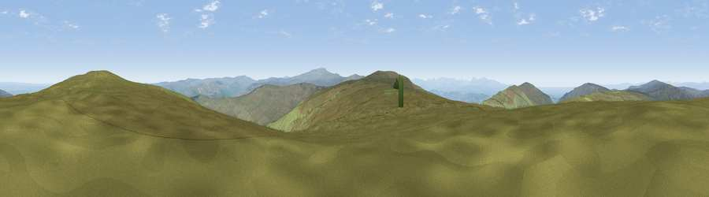

Viewpoint c10930_7304
#6881 in England · top 19% of its area beats it · —Where it is
The exact computed spot (NY 65275 46475). Click the marker for map links.
The view, rendered

A 360° render of this exact spot computed from the terrain model, tree cover and land cover — summer colours, afternoon light, calibrated against photographs of famous viewpoints. Real trees, hedges and buildings will differ in detail.
The panorama
Grey silhouette: terrain skyline in each direction (720 bearings, Earth curvature and refraction included). Dashed green: skyline with trees (+15 m) and buildings (+8 m) as obstacles. Blue strip: how far the ground is visible on each bearing.
Where the view opens
Wedge length = distance to the farthest visible ground on that bearing (vegetation-aware). Rings at 10, 25 and 50 km.
What fills the view
96% grassland · 3% woodland ·
Angular shares of the visible panorama (visual magnitude), not map area. Landscape diversity 0.09 (0–1 Shannon).
Key numbers
More beautiful places nearby
The staircase of upgrades: each row has a higher view potential than everything closer. Driving times are estimates from straight-line distance, calibrated against real road routing — check an actual route before setting out.
| Place | Direction | Drive | Score |
|---|---|---|---|
| Tom Smith's Stone Top | NE · 0 km | ~1 min | 71.3 |
| Grey Nag | NE · 2 km | ~5 min | 75.7 |
| Viewpoint near Renwick | S · 3 km | ~7 min | 77.0 |
| Viewpoint near Cumrew | WNW · 7 km | ~15 min | 77.2 |
| Viewpoint near Melmerby | S · 8 km | ~16 min | 78.1 |
| Viewpoint near Cumrew | WNW · 11 km | ~21 min | 78.8 |
| Barrock Fell | W · 19 km | ~32 min | 81.1 |
| Viewpoint near Watermillock | SW · 32 km | ~49 min | 82.6 |
54.81192, -2.54183 · source: screening · position refined by local search. Computed location — check access rights before visiting.